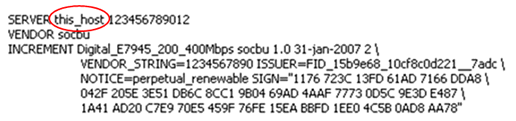
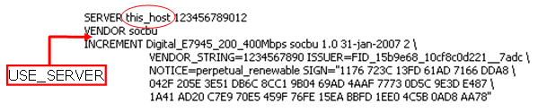

Editing .lic license files
In a setup with one or more central license servers, .lic license files must reside in the /opt/flexlm/license directory on both the license client and the license server.
The .lic file on the license server provides the actual license, while the .lic file at the client gets an additional USE_SERVER line which points to the license server.
Advantest strongly recommends adding the USE_SERVER line. When using a central license server, the USE_SERVER line improves performance compared to setting the LM_LICENSE_FILE environment variable.
The USE_SERVER line takes no arguments and should be used in client license files only. When SmarTest sees USE_SERVER, it ignores everything else in the license file except the preceding SERVER lines and transfers license control to the specified license server.
Server license files
The .lic license file on the license server side must reside in the flexlm license directory
/opt/flexlm/license/
The server license file must provide the server host name and the correct vendor daemon ("socbu").
Proceed as follows:
- Copy the .lic license file you received to the /opt/flexlm/license/ directory on the license server machine.
- Open the .lic license file in an editor.
- In the SERVER line replace the this_host string with the host name of the license server. Make sure the SERVER line also specifies the hostid and optionally the port of your license server. In a three-license-server configuration you have to edit all three SERVER lines.
- Make sure the VENDOR line reads VENDOR socbu
The graphic below shows the string to be replaced.

The SERVER line specifies the host name and hostid of the license server system and the TCP/IP port number of the license server manager (lmgrd). Normally a license file has one SERVER line. Three SERVER lines mean that you are using a three-license-server redundancy configuration. See License clients and license servers.
- <host_name> = The license server host name or IP address.
- <hostid> = The string returned by the lmhostid command.
- [port] = TCP/IP port number to use.
The VENDOR line specifies the daemon name. It must be socbu.
Client license files
The .lic license file on the client side must reside in the flexlm license directory of the Linux Controller:
/opt/flexlm/license/
The license file at the client must provide the location of the license server for SmarTest and the correct daemon ("socbu").
Proceed as follows:
- Copy the .lic license file you received to the /opt/flexlm/license/ directory on the client machine.
- Open the .lic license file in an editor.
- In the SERVER line replace the this_host string with the host name of the license server. Make sure the SERVER line also specifies the hostid and optionally the port of your license server. In a three-license-server configuration you have to edit all three SERVER lines.
- Make sure the VENDOR line reads VENDOR socbu
- Add a new line below the VENDOR line.
- Enter the USE_SERVER keyword. It takes no arguments.
- Optionally remove any license strings in the lines below. This can be made independently from the type of the license server.
The graphic visualizes the editing:

The USE_SERVER line can be used in both the client and the server license file. It ensures that the requested license features are obtained from the specified license servers.
At the client only, any license strings below the USE_SERVER keyword are ignored and can be removed. Only the licenses on the servers specified in the SERVER lines are read.
Functional changes
- Introduced before SmarTest 6.3.2